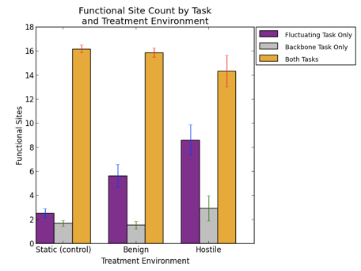
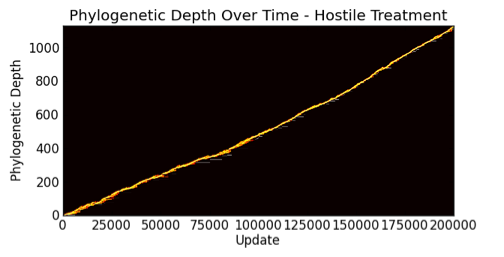

STATUS:
rosiec@13-42-76:/Volumes/rosiec/__research/devolab_research/evolution_of_modularity/raw_data/082/INTERTWINED/last_common_ancestor_mutation_landscapes$ python ../../../../../scripts/graph_generation/bar_chart_from_csv.py --error --groups 3 --xticks "Static (control),Benign,Hostile" --columns "1,2,3" --legend "Fluctuating Task Only,Backbone Task Only,Both Tasks" --pair --title "Vestigial Site Count by Task and Treatment Environment" --ylabel "Vestigial Sites" --xlabel "Treatment Environment" --separator "," degenerate_sites__intertwined___nototal.png c*_degenerate_site_count.csv n*_degenerate_site_count.csv p*_degenerate_site_count.csv rosiec@13-42-76:/Volumes/rosiec/__research/devolab_research/evolution_of_modularity/raw_data/082/INTERTWINED/last_common_ancestor_mutation_landscapes$ python ../../../../../scripts/graph_generation/bar_chart_from_csv.py --error --groups 3 --xticks "Static (control),Benign,Hostile" --columns "1,2,3" --legend "Fluctuating Task Only,Backbone Task Only,Both Tasks" --pair --title "Functional Site Count by Task and Treatment Environment" --ylabel "Functional Sites" --xlabel "Treatment Environment" --separator "," active_sites__intertwined___nototal.png c*_active_site_count.csv n*_active_site_count.csv p*_active_site_count.csv

rosiec@Loki:/Volumes/rosiec/__research/devolab_research/evolution_of_modularity/raw_data/082/populations/punish_intertwined_820001$ python ../../../../../scripts/graph_generation/plot_by_site_entropy.py --show --title "Hostile Treatment" by_site_entropy__hostile__for_poster.png by_site_entropy.csv rosiec@Loki:/Volumes/rosiec/__research/devolab_research/evolution_of_modularity/raw_data/082/populations/noreward_intertwined_820001$ python ../../../../../scripts/graph_generation/plot_by_site_entropy.py --show --title "Benign Treatment" by_site_entropy__benign__for_poster.png by_site_entropy.csv
rosiec@Loki:/Volumes/rosiec/__research/devolab_research/evolution_of_modularity/raw_data/082/populations/control_intertwined_820001$ python ../../../../../scripts/graph_generation/plot_phylogenetic_depth_abundances_over_time.py --title "Control Treatment" --most_recent_coalescence="../../INTERTWINED/control_intertwined_820001/data/stats.dat,10" --show phylo_depth_abundance_over_time__coalescence__control__forposter.png phylo_depth_abundances_over_time.csv rosiec@Loki:/Volumes/rosiec/__research/devolab_research/evolution_of_modularity/raw_data/082/populations/noreward_intertwined_820001$ python ../../../../../scripts/graph_generation/plot_phylogenetic_depth_abundances_over_time.py --title "Benign Treatment" --most_recent_coalescence="../../INTERTWINED/noreward_intertwined_820001/data/stats.dat,10" --show phylo_depth_abundance_over_time__coalescence__benign__forposter.png phylo_depth_abundances_over_time.csv rosiec@Loki:/Volumes/rosiec/__research/devolab_research/evolution_of_modularity/raw_data/082/populations/punish_intertwined_820001$ python ../../../../../scripts/graph_generation/plot_phylogenetic_depth_abundances_over_time.py --title "Hostile Treatment" --most_recent_coalescence="../../INTERTWINED/punish_intertwined_820001/data/stats.dat,10" --show phylo_depth_abundance_over_time__coalescence__hostile__forposter.png phylo_depth_abundances_over_time.csv

rosiec@Loki:/Volumes/rosiec/__research/devolab_research/evolution_of_modularity/raw_data/082/INTERTWINED/control_intertwined_820001/task_mappings$ python ../../../../../../scripts/analysis/extract_task_mappings.py --lineage_map -a complete_lineage_map.csv -v 5 6 8 ../data/lineage.dat ../data/phenotype/ rosiec@Loki:/Volumes/rosiec/__research/devolab_research/evolution_of_modularity/raw_data/082/INTERTWINED/control_intertwined_820001/task_mappings$ python ../../../../../../scripts/graph_generation/draw_map_task.py whole_taskmap.png lineage_map__complete_lineage_map.csv__values_only.csv
rosiec@Loki:/Volumes/rosiec/__research/devolab_research/evolution_of_modularity/raw_data/082/INTERTWINED/last_common_ancestor_mutation_landscapes$ python ../../../../../scripts/graph_generation/bar_chart_from_csv.py --groups 3 --xticks "Control,Benign,Hostile" --columns "3" --pair --title "Fraction of Second-step Mutants that Regained Fluctuating Task" --ylabel "Fraction" --xlabel "Treatment" --separator "," --error --show twostep_does_fluct.png c*_*/mutation_landscape_metrics.csv n*_*/mutation_landscape_metrics.csv p*_*/mutation_landscape_metrics.csv & rosiec@Loki:/Volumes/rosiec/__research/devolab_research/evolution_of_modularity/raw_data/085$ python ../../../scripts/graph_generation/bar_chart_from_csv.py --groups 3 --xticks "Control,Control,Hostile" --columns "3" --pair --title "Fraction of Second-step Mutants that Regained Fluctuating Task" --ylabel "Fraction" --xlabel "Treatment" --separator "," --show --error two_step__regained_fluct.png c*_i/mutation_landscape_metrics.csv n*_i/mutation_landscape_metrics.csv p*_i/mutation_landscape_metrics.csv &